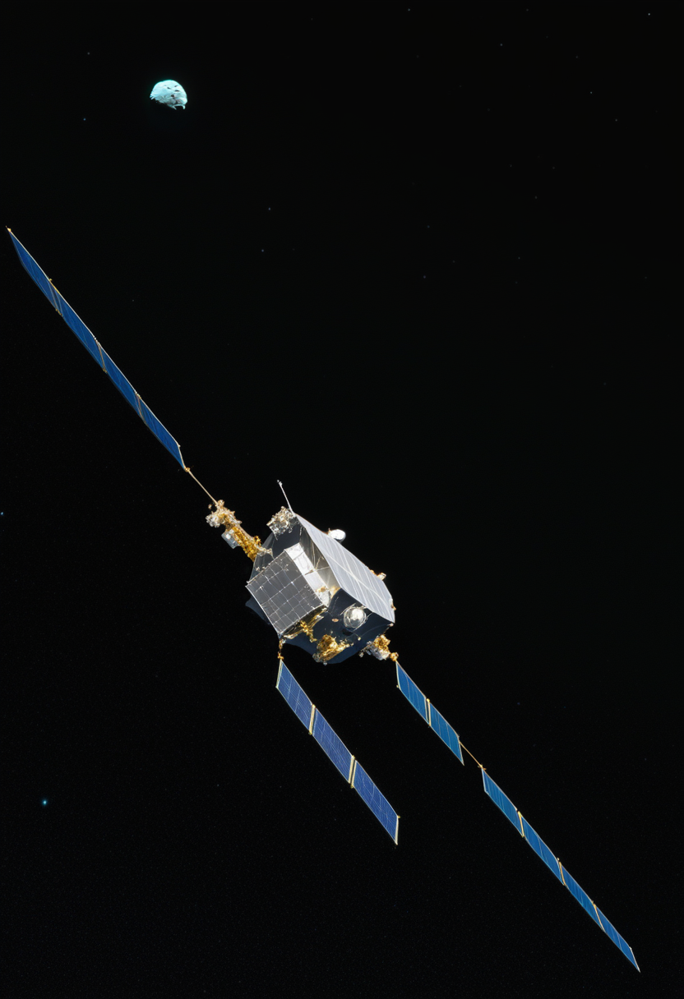
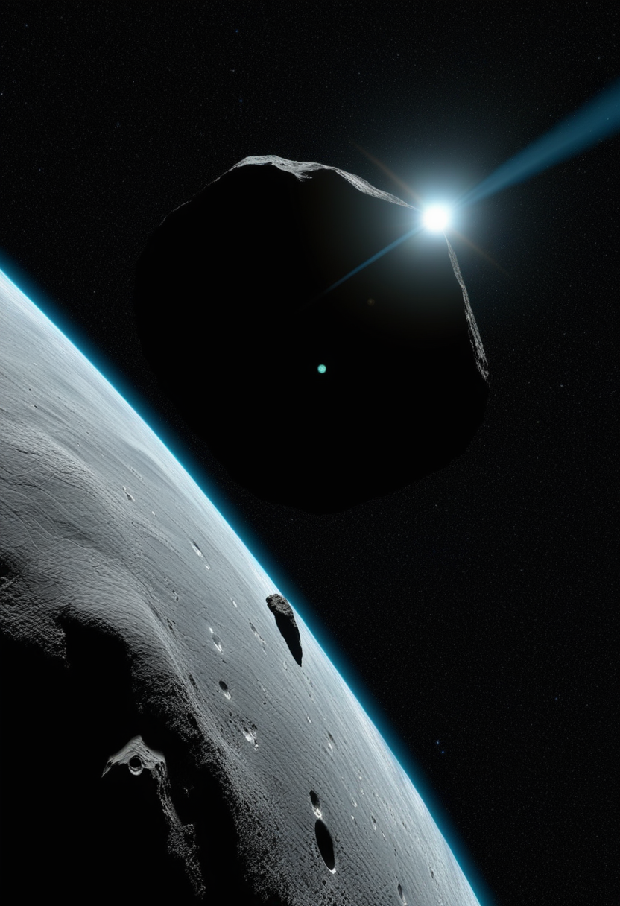
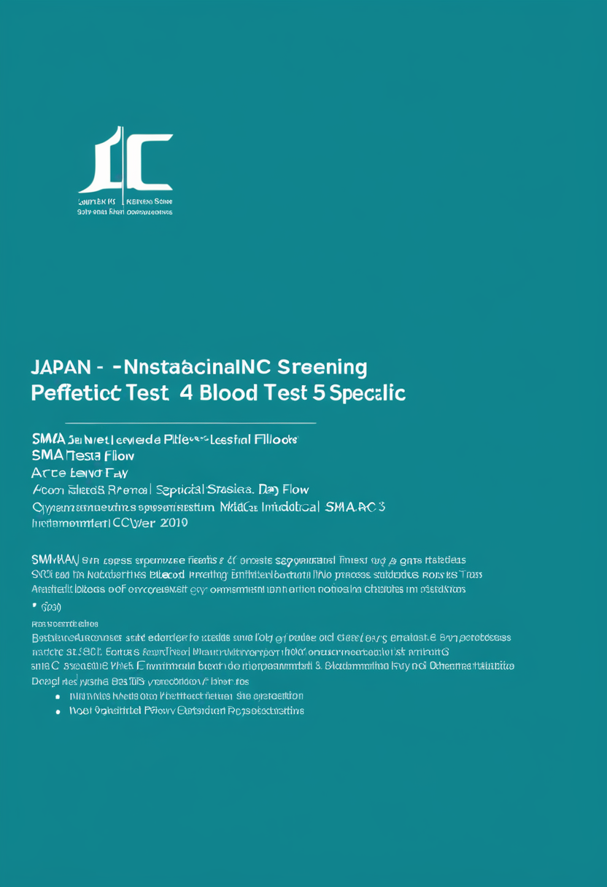
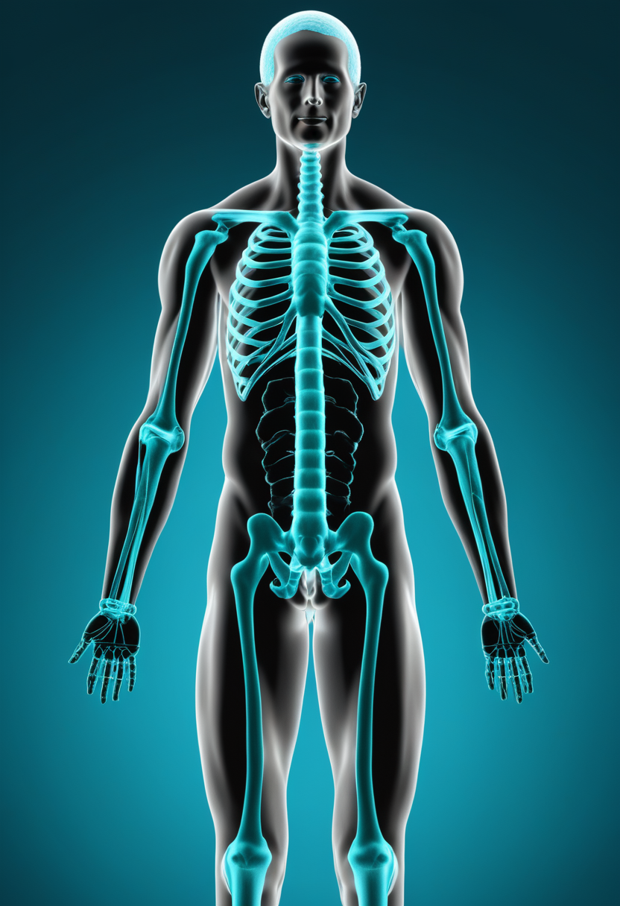
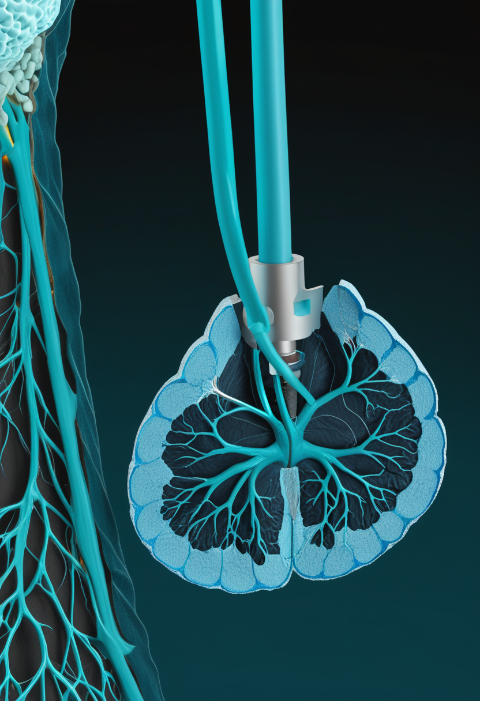
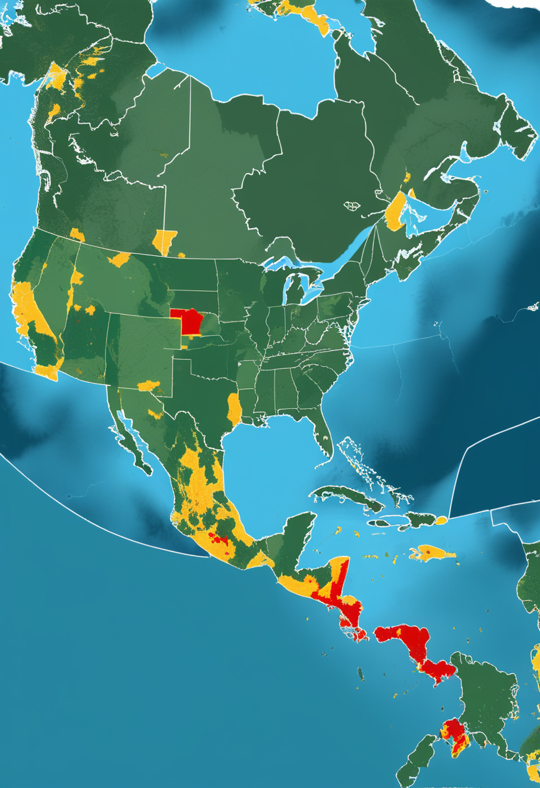
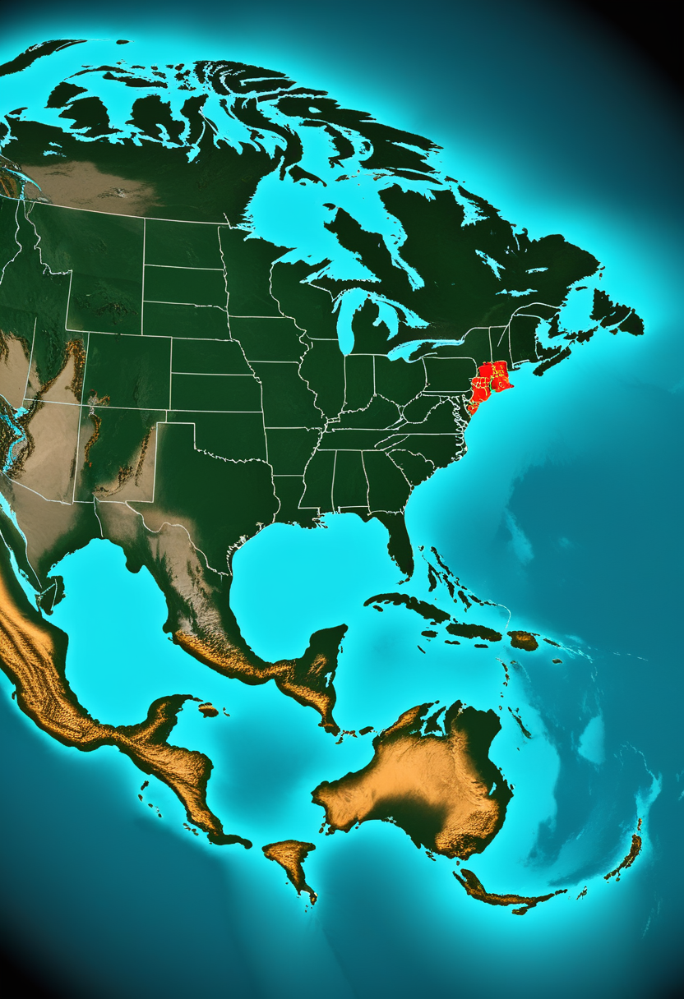
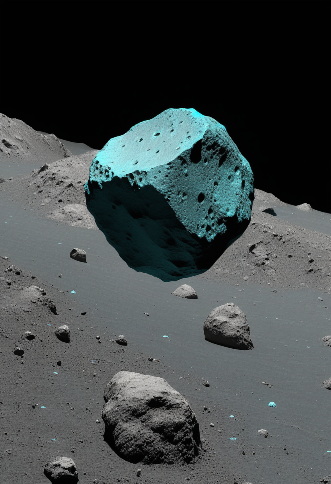
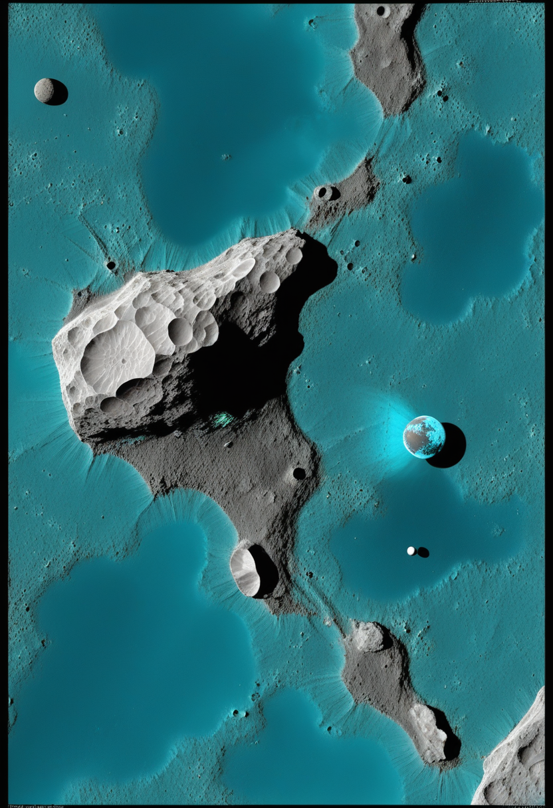
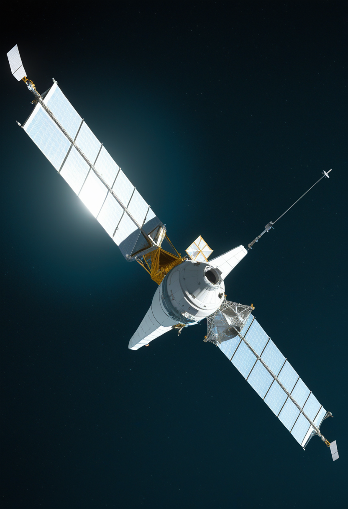

日曜日の便り。日本時間本日18時30分、探査機「はやぶさ2」が小惑星トリフネへ距離約1km・秒速5kmという超近接フライバイに挑む。同じ週末、中国の天問2号も準衛星カモオアレワへ20km圏内まで迫り、日中の探査機が同時に小惑星へ肉薄する稀な週末となった。地上ではエボラが1,481例へ拡大する一方、南極クルーズ船由来のハンタウイルス集団感染はWHOが終息を宣言。BCIの世界では、在宅で3,800時間使い続けた男性の記録が、技術が実験室を出て生活に根づき始めた証となっている。

JAXAは、探査機「はやぶさ2」が日本時間本日18時30分に小惑星トリフネへ最接近すると発表している。中心からの距離約1km・相対速度秒速5kmという「超近接フライバイ」で、これは日本の小惑星探査史上屈指の精密航法への挑戦となる。トリフネの詳細な姿が判明するのはフライバイ後になる見込みだ。同じ週末、中国国家航天局の天問2号も準衛星カモオアレワへ20km圏内まで接近する運用に入っており、月起源の可能性が指摘されるこの天体の観測データが蓄積されつつある。日本と中国、2つの探査機がほぼ同時に「準衛星」という特異な軌道を持つ小惑星へ肉薄する、探査史上稀な週末となった。

日本マススクリーニング学会は5月25日時点で、原発性免疫不全症（SCID）とSMAを同時対象に加えた拡大スクリーニングの実施状況を更新した。こども家庭庁は2023年11月にSMAを新生児マススクリーニングに加える方針を決定済みだが、全国一律の公費実施はまだ先で、生後4〜6日の血液検査でSMN1遺伝子欠失を調べ陽性なら約5日以内に専門医療機関へ紹介する体制の、都道府県ごとの試行運用が広がっている段階にある。

3月にFDAは高用量ヌシネルセン（スピンラザ）レジメンを承認し、ノバルティスの遺伝子治療薬オナセムノゲンアベパルボベクの髄腔内投与版「Itvisma」も承認された。欧州では6月に欧州委員会がItvismaを正式承認しており（本紙7/4号既報）、体格の大きい年長児・成人にも遺伝子治療の選択肢が広がる形で、米欧それぞれの規制当局が承認範囲を段階的に拡大している。
新生児スクリーニングという「早期発見」の入口と、高用量ヌシネルセン・Itvismaという「対象拡大」の出口が同時に前進しており、SMA治療は年齢・体格を問わない個別最適化の段階に着実に入りつつある。
Neuralinkが5月7日に発表した新型手術ロボットは、電極スレッドを脳のほぼ任意の領域へ埋め込めるとされる。運動機能回復に留まらず、パーキンソン病・難治性てんかん・治療抵抗性うつ病といった疾患への応用も視野に入れており、2026年中のPhase 3試験開始、2027年の本承認申請、2028年の商用化（麻痺患者向け）が現行の目標とされている。
UC Davis・Brown大学・Mass General Brighamの共同チームは、ALSにより四肢麻痺と構音障害を抱える男性が、左前中心回に256本の電極を持つ4つのマイクロ電極アレイ（BrainGate2臨床試験用BCI）を用い、約2年間で3,800時間以上・18万3千を超える文を在宅で送信したと報告した。平均通信速度は毎分56語、125,000語彙での単語精度は99%に達し、研究者不在のまま就業継続やメール送受信を可能にした点は、BCIが「研究室の証明概念」から「日常の支援技術」へ移行しつつあることを示す実例となっている。

皮質表面型「Layer 7」インターフェースは、開頭を伴わない低侵襲手術で1,024電極の配置を可能にする。同社は2025年、業界初とみられるBCIの本承認（PMA）申請を行ったとされ、開頭手術を要するNeuralinkや血管内アプローチのSynchronとは異なる第三の路線として存在感を強めている。
BCIは「侵襲度」を軸にした企業間競争に加え、Precision NeuroscienceのPMA申請で規制の階段を一段上がった。何よりBrainGate2の3,800時間という数字は、BCIが臨床試験を出て生活に根づき始めた最初の具体例として重い意味を持つ。

WHOのDisease Outbreak News（DON-612、7月3日公表）によると、コンゴ民主共和国は基準日6月30日時点で1,460例確定・452死者、ウガンダは7月2日時点で20例確定・2死者に達した。フランスからの輸入例1件を含め、3か国合算で確定1,481例・死者454名となり、前回更新（7月2日時点1,406例・438死者）比でおよそ75例・16死者の増加を記録した。PHEIC（国際的に懸念される公衆衛生上の緊急事態）下でも拡大ペースは鈍化していない。
6月30日にWHOへ通報されたウガンダ・キェゲグワ県のマールブルグウイルス病確定例（1〜1.5歳児）は、その後死亡が確認された。エボラの強化サーベイランス中に発見された単発例で、特定された接触者は現時点で無症状のまま経過観察が続く。一部報道は家族内での追加感染の可能性を示唆しているが、WHO・ウガンダ保健省による正式確認は取れておらず「要確認」の情報にとどまる。

南極方面クルーズ客船「M/Vホンディウス」号に関連したアンデスウイルス（ハンタウイルス）アウトブレイクについて、WHOは7月2日、最後の濃厚接触者の隔離解除をもって終息を宣言した。累計は確定11・疑い2の計13例、死亡3例（致死率約23%）。エボラ・マールブルグという二重フィロウイルスの悪材料が続く中、数少ない「収束」の実例となった。
フィロウイルス（エボラ・マールブルグ）の同時流行地域という前例の薄い状況が続く一方、ハンタウイルスは制御に成功した。医療リソース配分の巧拙が、感染症対応の明暗を分けつつある。

JAXAは、探査機「はやぶさ2」が日本時間本日18時30分に小惑星トリフネへ最接近すると発表した。中心からの距離約1km・相対速度秒速5kmという「超近接フライバイ」で、トリフネの詳細な姿が判明するのはフライバイ後になる見込みだ。日本の小惑星探査史上屈指の精密航法への挑戦であり、世界中の探査チームがこの瞬間を注視している。

中国国家航天局の小惑星探査機・天問2号は7月4日より、準衛星（2016 HO3）カモオアレワへの接近運用を開始し、20km圏内まで近づく見通しだ。同天体が「月起源の破片」か「通常の宇宙風化小惑星」かを巡る論争に、Nature Communications誌の最新分析が新たな材料を投じており、7月中に予定される約1kgのサンプル採取が、この論争に決着をつける可能性がある。

老朽化し軌道降下が続くNASAのSwift宇宙望遠鏡を救うための捕獲衛星「LINK」は、伝説的なペガサスXLロケット最後の飛行で7月3日に打ち上げられ、同日中に初回通信の確立に成功した。今後数週間の機能確認を経て、Swiftの軌道を高度150マイル押し上げる作業に入る計画で、順調にいけば9月には観測再開の見込みだ。
日・中・米の探査機・観測ミッションが同一週末に集中し、天体探査における「多極化」を象徴する一週間となった。老朽望遠鏡を救う手と、まだ見ぬ小惑星へ触れる手が、同じ空の下で動いている。
2026年1月、Trends in Cognitive Sciences誌に19名の意識研究者による論文が掲載され、AIシステムの「意識指標」フレームワークが提示された。3月にはさらに、「認知的デカップリング」と「目標の自己決定」を意識の必要条件とする"Dual-Laws Model"が提案されるなど、技術の先回りを狙った倫理的枠組み整備が進んでいる。
AIとバイオマーカーを統合し個人ごとの認知システムを動的にモデル化する「デジタルツイン認知」の研究が進んでいる。継続的モニタリングや予測的介入への応用が期待される一方、標準化・データプライバシー・倫理的枠組みの未整備が課題として指摘されている。
2025年3月にはEon Systemsがショウジョウバエ脳（14万ニューロン）の閉ループ行動再現に成功したと既報（本紙6/21号）だが、2026年初頭時点でヒト神経細胞の完全なシリコン上再現や意識のアップロードは未達成。「情報の転写が意識という過程そのものを転移させるのか、単なる複製に過ぎないのか」という哲学的論争も未解決のままだ。
技術（デジタルツイン・全脳エミュレーション）は着実に前進する一方、「意識とは何か」を巡る合意形成が追いついていない構図が続く。Dual-Laws Modelのような新しい枠組みが、その隙間を埋めようとしている。
2026年7月5日、日本時間18時30分、はやぶさ2が小惑星トリフネへ距離約1kmまで近づく。その数十時間前には中国の天問2号がカモオアレワへ肉薄し、老いた望遠鏡を救う衛星は初めての声を宇宙で交わした。地上ではエボラが1,481例まで広がる一方、ハンタウイルスの流行にはようやく終わりが告げられた。BrainGate2を使う男性は、実験室の外で3,800時間を生きた。意識とは何かという問いに、Dual-Laws Modelという新しい補助線が引かれた。遠くへ手を伸ばす動きと、いま目の前の命を守る動きが、今週もまた同じ朝に並んでいる。
では、また明日の朝に。 — JaH